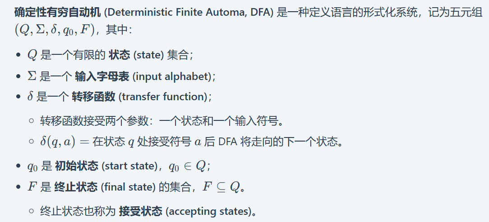
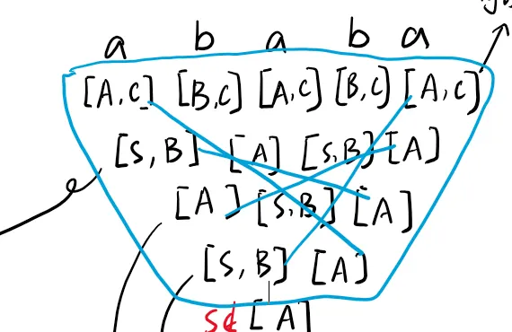

简介
NJU 2025fall 形式语言与自动机 课程笔记，按个人理解整理，不保证完全正确！
参考资料：课程讲义
DFA，NFA与正则语言
DFA：每个状态对每个输入符号有唯一的下一状态



DFA和NFA语言表达上是等价的：
-
能够用 NFA 表达的语言，一定存在某个 DFA，能够表达出相同的语言；
-
能够用 DFA 表达的语言，一定存在某个 NFA，能够表达出相同的语言。

 **NFA 和 ε-NFA 在语言的表达能力上是等价的。**
**NFA 和 ε-NFA 在语言的表达能力上是等价的。**
-
能够用 NFA 表达的语言，一定存在某个 ε-NFA，能够表达出相同的语言；
-
能够用 ε-NFA 表达的语言，一定存在某个 NFA，能够表达出相同的语言。


消除空转移
闭包性质
正则语言的泵引理

解释：

-
假设识别语言 L 的 DFA 有 n 个状态，现在取一个足够长的字符串 w，长度至少是 n。
-
当自动机从初态开始逐个读取字符时，读前 n 个字符时，自动机必然访问了 n+1 个状态。由于状态数只有 n，根据鸽笼原理，必然有两个位置访问到了同一个状态。把这段重复的路径对应的输入部分标记为 y（y就是第一个环），前面的部分是 x，后面的部分是 z。于是有 w=xyz
-
因为 y 是第一个环，所以 xy 长度不可能超过 n（即使最后一个状态上有第一个环，也才读取n个字符）。
上下文无关文法


对于同一个字符串可能有许多不同的推导。通过强制要求每次都替换最左边的变量（或者每次都替换最右边的量），我们可以避免这种不确定性。


通过从左往右扫描目标字符串，且只看下一个符号的方式，找到唯一一个你在最左推导中要使用的生成式，这样的文法称为 LL(1) 文法，LL(1) 文法是不会出现歧义的
歧义性的解决方法
-
根据优先级：运算符的优先顺序，深度越深，越远离开始节点，优先级越高。
-
根据关联性：决定哪个运算符先被执行。例如，在算术表达式中，乘法和除法运算符的优先级相同，但乘法运算符的关联性是左结合的，而除法运算符的关联性是右结合的。
例子：句子id+id*id和id+id+id可能的分析树 E→E+E | E*E |（E）| -E | id

消除歧义的关键：
-
划分优先级和结合性
-
引入一个新的非终结符，增加一个子结构并提高一级优先级（优先级的判断）；
-
递归非终结符在终结符左边，运算具有左结合性，否则具有右结合性。
例子：消除歧义 S -> S + S | S * S | x
根据优先级，我们可以抽离出最高优先级元素（x），根据计算习惯，加法应该最后运算（也就是最先被解析），所以抽离出中间层（S*S）和最底层（S+S），因此可以这么消除歧义：
1 | E -> E + T | T |
例子：消除歧义：E→E+E | E*E |（E）| -E | id
-
优先级从低到高：
[+]；[*]；[( ), -, id] -
结合性：左结合
[+, *]右结合[-]无结合[id] -
非终结符与运算：
E:+（E产生式，左递归）T:*（T产生式，左递归）F:-,( ),id（F产生式，右递归）
最后结果：
1 | E → E + T | T |
消除产生式
去除空串
人话：
-
先找到所有可以推导为空串的符号。首先把最明显的一步能推出来的找到，再上溯找到所有
-
在每个产生式的右侧，把上述符号轮番去掉（排列组合地去掉）


去除单元产生式
人话：
-
单元产生式：右边只有一个变量的产生式，如 A→ B
-
想要消除单元产生式，如上例，如果有 B → a，那么就可以替换为 A→a从而消除
-
再来一个例子： 如何消除 S→E的单元产生式


去除无用变量
-
无法推导的变量：无法推导出由终止符组成的字符串（永不终结）。
- 去除算法：找到能一步推出终结符的变量，上溯找到更多可以推导的变量，无法找出更多后，把包含剩下变量的所有产生式去掉

-
不可达符号：一个变量或者终结符不会出现在任何从起始符号开始的推导中，那么它也应该被删除。（人话：从起始开始用不到的变量）
有了上述基础，我们知道如何删除掉无用变量：
-
一个符号是 有用的 (useful)，如果它出现在了某个从起始符号到某个终结字符串的推导中，否则，它就是 无用的 (useless)。
-
删除所有的无用符号，通过：（顺序不可更改）
- 删除所有不能导出终结字符串的符号；
- 删除所有从起始符号不可达的字符串。
乔姆斯基范式


注：图中的“最多只创建一个变量”指的是自己创建的，不包括题中已经给出的
PDA/NPDA
**下推自动机 (Pushdown Automata, PDA)**是一种在语言的定义能力上和 CFG 等价的自动机。不过只有非确定性下推自动机才能定义所有的上下文无关语言。

-
1-PDA 识别上下文无关语言（CFL）。
-
2-PDA（或更多栈）识别递归可枚举语言（RE），等价于图灵机。
- 关键想法：两个栈可以模拟一个图灵机的带子（一个栈存带子左半部分，一个栈存右半部分，栈顶分别是读写头两边的符号）。
- 因此 2-PDA = 图灵机。
-
k-PDA (k ≥ 2) ⇨ 都是 RE，彼此等价。因为 2-PDA 已经与图灵机等价，增加更多栈不会增加语言识别能力（仍为 RE）。
CFG转化PDA

转化过程：
其实就是收集所有的右边不是终结符的产生式，将产生式右部压栈。对右边是终结符的就弹出栈。

注：比如A/0A的意思是栈中的A变成0A，1/ε 是把1从栈中弹出

上下文无关语言
字符串是否属于语言-CYK算法
——想要知道字符串w是否在上下文无关文法G描述的上下文无关语言L中。
注：
-
Xii指从第i个字符到第j字符形成的字符串
-
归纳的意思是，从i到j形成的字符串，每次分为两个部分，对两个部分可能的所有组合，查找有没有对应的产生式，有就加入这个字符串对应的集合（可以看手写的推导）


快速计算方法：比如算ababa的集合：

上下文无关语言的泵引理
我们要找一个足够长的串s∈L，使得对它任意一种满足 1, 2 的划分，**总存在（所有情况）**某个n使得3不成立，并且注意这个不成立是对L来说的，而不是不满足自己举的字符串例子


参考知乎原文
uvwxy定理是正则泵引理的推广，其实是在禁止套娃。
假设我们有这个简单的CF语法：
-
S → A
-
A → aA | b
通过A的套娃，我们可以产生形如aaa…aaaab这样的字符串。禁止套娃指的就是一条规则只能用一次，也就把我们能产生的字符串限定在了 {b, ab} 这个小小的集合内。
我们直觉上容易看出，如果禁止套娃，那么一个CF语法生成的字符串长度是有上限的。毕竟生成规则的个数是有限的，在用过了所有规则以后，只有套娃才能让字符串在纸上无限延申。
既然禁止套娃能生成的字符串长度是有限的，不如把最长的非套娃字符串的长度表示为L，例如上例中L=2。uvwxy定理说：所有长度大于L的字符串（他们自然全都是套娃字符串了）都可以被分解为uvwxy五个部分，其中u和y是无关紧要的前后缀，而vwx是一个套娃：v和x是套子，w是娃。
vwx是套娃是什么意思呢，意思是形如uvwxy，uv(vwx)xy，uv(v(vwx)x)xy，uv(v(v(vwx)x)x)xy这样的套娃全都可以通过这个语法生成。这些套娃的通式是$uvnwxny$ 。可以看出w是中心的那个最小的娃，它两旁的一层又一层的v…x组成了一层又一层的套娃。

**那么怎么把它收敛到我们一般说的正则泵引理（uvw定理）**呢？我们注意到对于正则语法，x和y必须是空的（等于 ϵ ）（注：感觉这里的意思就是正则表达式结束了就不允许再有字符串产生）。因为我们既然能够对vwx进行套娃，那就说明这个套娃里在某个时间点存在non terminal，而正则语法不允许non terminal右侧有东西。换句话说，uvwxy定理收敛到了 $uvnw\epsilonn \epsilon=uv^nw$ ，也就是正则泵引理/uvw定理。
Ogden定理

只要标记每个点都是特异点，那么就可以从 Ogden 引理得到泵引理。也就是说 Ogden 引理是泵引理的推广。

注：
-
将a全设为标记点
-
v只有一种情况，那就是含若干数量（k）的 a
-
x有三种情况：
- 一种是含若干数量（h）的 a ，证明如上（就是证a和c数量相同）
- 一种是只含有 b（还是证a和c数量相同）
- 一种是含若干数量的 c （证a和b数量相同）
为什么case3必须要用阶乘，因为要保证每个n都有一个对应的i，或者说这个i是一个一定会存在的整数

上下文无关语言的闭包性质
| 语言 | 封闭性 |
|---|---|
| 正则语言 | 交、并、补、连接、同态运算、反转 |
| 上下文无关语言 | 对交、补、差不封闭，对并、拼接、闭包、翻转封闭 |


证明核心思想：

构造$P’$：
$P’$ 的状态是形如 $[q,w]$ 的二元组：
-
$q$ 是原 PDA $P$ 的状态；
-
$w$ 是某个 $h(a)$ 的后缀（即 $h(a)$ 的一部分）。
举例：假设 $h(a)=“abc"$，那么 $w$ 可以是："abc"（整个字符串）、"bc" 、"c" 、空串；这样的 $w$ 只有有限种可能，因为 $h$ 的定义域有限。
转移规则：
注：通俗来讲，整个过程就是：P’ 读取一个自己的输入符 → 将同态映射后的字符串存入缓冲区 → 从缓冲区模拟 P 的转移，消耗掉匹配的部分 → 直到缓冲区为空且 P 处于接受状态时，P’ 就接受了这个字符串。


例题：


证明：对交，补，差不封闭


图灵机


注：可以把状态q看作一个光标

图灵机编程
用图灵机编程的有一个关键的注意点就是保持两边都是无限的空格，不要在中间引入空格。


注：记录初始元素pre，之后遇到不同元素时切换状态，将pre更新（一次遍历修改元素）

注：过程分为左右两部分。左侧的部分完成右移操作（参考例2），右侧部分完成将最右侧元素“携带”到最左侧的操作，最后终止。

注：题目指纸带上最后只剩下返回值n/y，红色转移以及右侧部分是判断字符串满足L后，将字符全部转化为a（除了第一个b），最后清除所有的a，将仅剩的第一个b转化为y后终止。蓝色转移以及左侧部分是在发现不满足L后，将后续字符全部变为a，直到遇到B，然后向左回来将所有的a清除，直到仅剩的第一个b（初始为b或者第一个a转化而来），将b变为n后终止。
多道 (Multiple Tracks)
我们可以将纸带符号视为是一个有 k 个分量的向量，每一个分量都来自于一个有穷的字母表。
这使得纸带看起来好像有 k 个磁道，但实际上还是一个纸带，我们将这个向量整体视为一个符号。
假设除了某一个磁道以外的所有输入符号都是空，则这个多道程序就退化成了之前的单道程序。

标记 (Marking)
对于一个额外磁道的通常的作用是来 标记 (mark) 特定的位置。在这一磁道上，几乎所有的纸带符号都是空的，只有一些特定的位置上放置了一些特殊的符号（标记），这使得图灵机能够很方便地在纸带上寻找这些特定的位置。
缓存 (caching)
其实，不仅符号可以是一个向量，状态也可以是一个向量。向量的首分量是“控制状态”，其余分量存放来自一个有穷字母表的数据。于是，我们得到了一个具有存储功能的图灵机。
闭包
-
递归可枚举语言和递归语言在并集、拼接、星闭包、翻转、交集以及逆同态操作下都是封闭的。
-
递归可枚举语言在同态操作下是封闭的。
-
递归语言在差集、补集操作下封闭。
-
有限语言 ⊆ 正则语言 ⊆ 递归语言 ⊆ 递归可枚举语言


判定性与复杂度

判定性—停机问题


-
HALT 不是可判定的，但它是可识别的
-
ATM不可判定

-
ETM不可判定


递归可枚举语言（RE，recursive enumerable language）：还可以叫图灵可接收语言（Turing-acceptable language）图灵可识别语言（Turing-recognizable language）等。一个语言是递归可枚举语言，当且仅当存在一个图灵机，该图灵机仅接收该语言中的字符串（也就是说，对于不在该语言中的字符串，该图灵机可以拒绝（reject）或者永远不停机）。
定义一个递归可枚举（RE）语言的补集为 co-RE。
一个语言是可判定的，当且仅当存在一个图灵机，该图灵机接收该语言中的字符串，拒绝不在该语言中的字符串。这样的语言又叫递归语言。一个语言如果是 递归（可判定） 则它既是 RE 又是 co-RE。
HALT 的补集不是递归可枚举的。
P，NP
-
P类问题：存在多项式时间算法的问题。

-
NP问题：能在多项式时间内验证得出一个正确解的问题。(NP:Nondeterministic polynominal，非确定性多项式)。

-
P类问题是NP类问题的子集（即存在多项式时间算法的问题，总能在多项式时间内验证它，一个简单的例子，给定一个可能的答案，只要算出真实的解和这个答案比较一下就知道了）
- 注：NP我们可以在多项式时间内验证并得出这个问题的一个正确解。
-
NPC类问题（NP complete，Nondeterminism Polynomial complete）：存在这样一个NP问题，所有的NP问题都可以约化成它。换句话说，只要解决了这个问题，那么所有的NP问题都解决了。
- 其定义要满足2个条件：首先，它得是一个NP问题；然后，所有的NP问题都可以约化到它。
- 要证明npc问题的思路就是： 先证明它至少是一个NP问题，再证明其中一个已知的NPC问题能约化到它。（NP完全理论）
-
NP难问题（NP-hard问题）：NP-Hard问题是这样一种问题，它满足NPC问题定义的第二条但不一定要满足第一条（就是说，NP-Hard问题要比 NPC问题的范围广，NP-Hard问题没有限定属于NP），即所有的NP问题都能约化到它，但是它不一定是一个NP问题。
典型NPC问题：


注：≤ₚ：表示存在一个多项式时间可计算的转换函数（多项式时间归约）
归约


Rice定理
非平凡 = 存在至少一个图灵机有这个性质，也至少有一个图灵机没有这个性质。
Rice 定理：任何非平凡的、关于图灵机语言的性质，都是不可判定的。
递归可枚举语言的所有非平凡性质都是不可判定的。


SAT问题
如果存在某种对于逻辑变量的赋值方式，使得某个布尔表达式为真，则称这个布尔表达式是可满足的。
SAT问题就是：给定一个布尔逻辑表达式，判断是否存在一组对变量的真值赋值，使得整个表达式为真。 如果存在，我们称这个表达式是“可满足的”。
SAT 问题是 NP 完全 的。
3SAT 问题也是一个 NP 完全问题：
给定一个有穷的布尔变量集合$X={x_1,x_2,…,x_n}$，变量 $x_i$ 取值为 $1$ 或者 $0$，另有一组子句$C={c_1,c_2,…,c_m}$，$\mathbb{C}= c_1 \land c_2 \land … \land c_m$，$c_i = x_j \lor x_k \lor x_l$。求是否存在一组取值使得 $\mathbb{C}$ 为真，即任意 $c_i$ 为真。
迁移网络，时间自动机

演变路径指的是从某个状态出发，按照迁移系统的边（考虑所有可能的输入选择）能无限进行下去的状态序列，这些路径必须是可达的（即必须存在相应的迁移）。
路径量词
| 符号 | 意思 | 例子 |
|---|---|---|
| A | 对所有路径（All paths） | “无论怎么走，都会…” |
| E | 存在一条路径（Exists a path） | “有可能走出一条路使得…” |
时序算子
| 符号 | 意思 | 例子 |
|---|---|---|
| G | 一直（Globally） | “一直保持…” |
| F | 最终（Finally） | “最终会到达…” |
| X | 下一步（neXt） | “下一步会…” |
| CTL公式 | 中文意思 | 类比 |
|---|---|---|
| AG φ | 总是φ | “天总是蓝的”（永远成立） |
| AF φ | 最终总会φ | “人最终都会死”（必然发生） |
| EF φ | 有可能φ | “明天有可能下雨”（可能发生） |
| EG φ | 有可能一直φ | “有可能一直不下雨” |
| AG (φ → AF ψ) | 如果φ发生，最终一定会ψ | “如果下雨，地面最终会湿” |